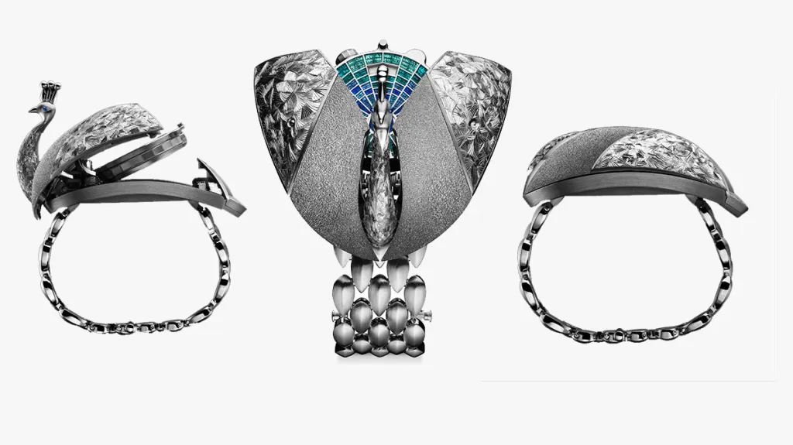
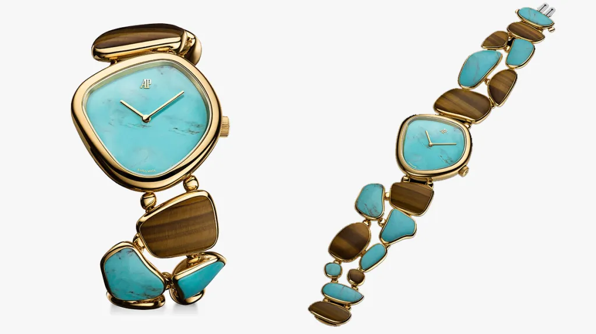

Audemars Piguet возвращает искусство ремесла
На выставке Watches and Wonders Дом Audemars Piguet представил не просто новые часы, а новую философию часового искусства

На выставке Watches and Wonders Дом Audemars Piguet представил не просто новые часы, а новую философию часового искусства. Проект Atelier des Établisseurs стал переосмыслением исторической системы établissage, существовавшей в XVIII веке, когда над созданием часов работали независимые мастера, каждый отвечая за свою уникальную часть. Сегодня бренд возвращает эту идею в современность, создавая пространство, где штатные специалисты и приглашенные ремесленники совместно работают над лимитированными коллекциями высокой сложности.
Главная задача проекта — не ностальгия по прошлому, а сохранение исчезающих ремесел. Ручная скелетонизация, традиционная гравировка, работа с камнем, редкие техники обработки стекла и отделки механизмов постепенно уходят из индустрии, уступая место автоматизированному производству. Audemars Piguet делает ставку именно на этих мастеров, возвращая им не только работу, но и авторство. В отличие от классической швейцарской системы, где многие имена остаются за кадром, здесь каждый участник проекта назван открыто — от часовщика до эмальера.

Первые три модели Atelier des Établisseurs демонстрируют эту идею особенно ярко. Établisseurs Galets вдохновлены природными формами долины Жу: корпус из желтого золота напоминает гладкую гальку, а бирюза и тигровый глаз создают ощущение природной пластики. Établisseurs Peacock превращает секретные часы в кинетическую скульптуру: при нажатии скрытый механизм раскрывает крылья и превращает драгоценного жука в павлина, открывая миниатюрный циферблат. Établisseurs Nomade соединяет эстетику карманных и настольных часов, превращая механизм в архитектурный объект, где ручная скелетонизация становится главным художественным жестом.

Для бренда это не коммерческий запуск, а инвестиция в само понятие часового мастерства. Atelier des Établisseurs напоминает, что настоящая haute horlogerie рождается не только в лабораториях инноваций, но и за рабочими столами мастеров, чьи знания невозможно заменить машиной. В эпоху масштабного производства Audemars Piguet делает ставку на редкость другого рода — на человеческие руки, время и талант.
Фото: Audemars Piguet